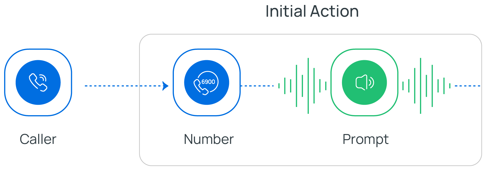
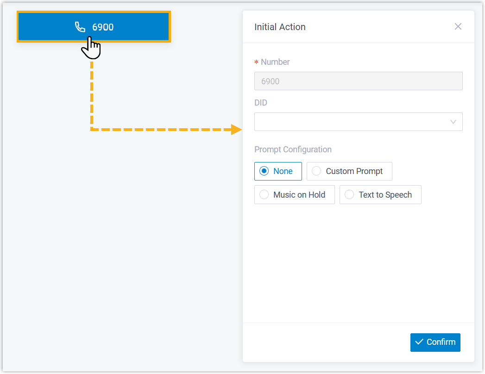
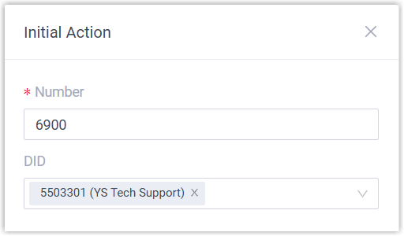
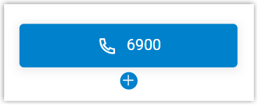

Initial Action
This topic provides an overview of the Initial Action component, and describes its restriction, configuration, as well as supported component connections.
Component restriction
Each call flow contains exactly one Initial Action component. This component is automatically added upon call flow creation and can not be deleted.
Component introduction
Initial Action component is the entry point of a call flow. It allows you to specify the phone number(s) that callers can dial to initiate the flow, and optionally configure an audio prompt to welcome callers or provide instructions for them.

- Supported number types
- You can assign extension number or trunk DID number(s) to the component.
- Supported prompt types
- You can add audio prompt(s) or a text-to-speech message to interact with callers.
-
Prompt Type Description Custom Prompt Choose from existing custom prompts, or create a new one by recording with an extension or uploading an audio file. Music on Hold (MoH) Choose from existing MoH. Note: Before you begin, make sure the desired MoH is configured in .
Text to Speech (TTS) Enter the desired text, which will be converted to speech in the selected language and voice style.
Note: Before you begin, make sure the desired TTS language is available in .
Component configuration
- After creating a call flow, click Initial Action
component to proceed with the configuration.

- Specify the number(s) that callers can dial to initiate the call
flow.

Item Instruction Number Retain the default extension number, or customize a number. Note:- The custom number can fall outside of the default range (6900 - 6999 / 50900 - 50999).
- Once saved, the number can not be modified.
DID Optional. Select one or more trunk DID number(s) from the drop-down list. Note:- Up to 500 DID numbers are supported. Note that the more DID numbers assigned, the longer it takes to match inbound call with the call flow.
- Inbound calls from DID numbers can be routed
to the call flow only in the following cases:
-
If the received DID number is 7 digits or fewer, it exactly matches a configured DID number.
-
If the received DID number is longer than 7 digits, its last 7 digits exactly match a configured DID number.
-
- Optional: Configure audio prompt(s) or a text-to-speech message to
welcome callers or provide instructions for them.
Item Instruction Custom Prompt 
- Click Custom Prompt.
- Specify custom prompt(s).Note: A maximum of 5 custom prompts is supported.
- To choose from an existing prompt, select it from the drop-down list of Prompt.
- To use a new prompt, click Record
New to record prompt with an
extension, or click Upload
to upload an audio file.Note: The new prompt will be saved in .
- Optional: To play the custom prompt in
a loop, select the checkbox of Enable
Loop Playback.Note: The looped prompt will be overridden if the next connected component is configured with a prompt.
Music on Hold 
- Select Music on Hold.
- Select an existing MoH from the drop-down list of Music on Hold.
Note: The MoH will be overridden if the next connected component is configured with a prompt.Text to Speech (TTS) 
- Select Text to Speech.
- Complete the rest of the configurations.Note: The new TTS message will be saved to the system and synchronized to .
- Click Confirm.
The selected number will appear on the component.

Component connections
Initial Action component can be connected to one component, which can be any of the supported components.